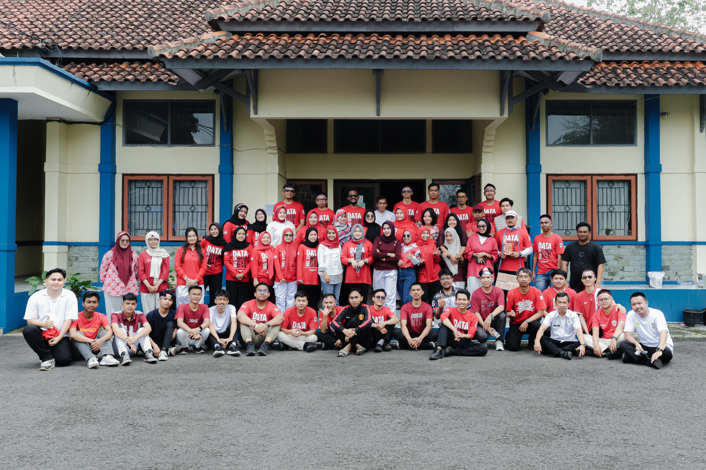
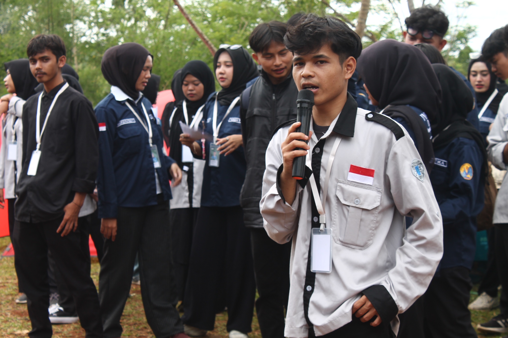
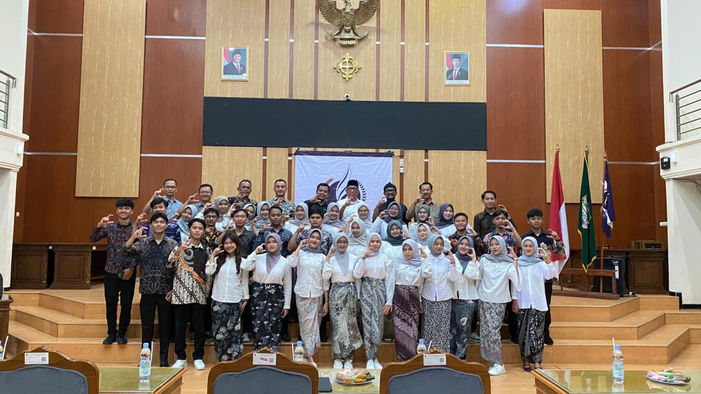
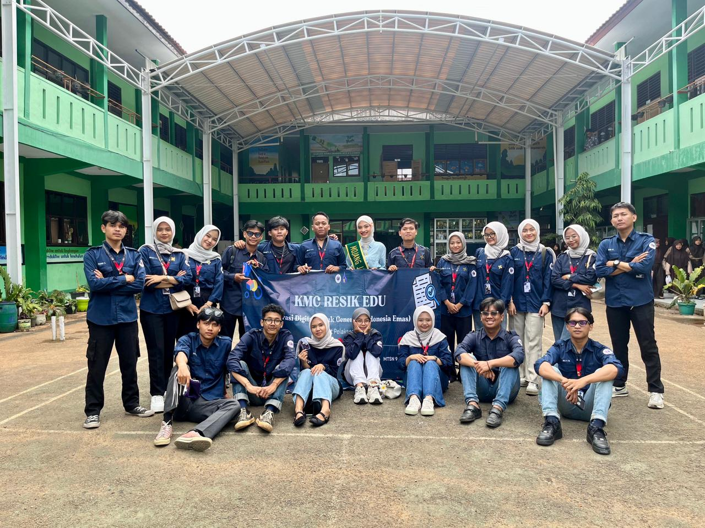
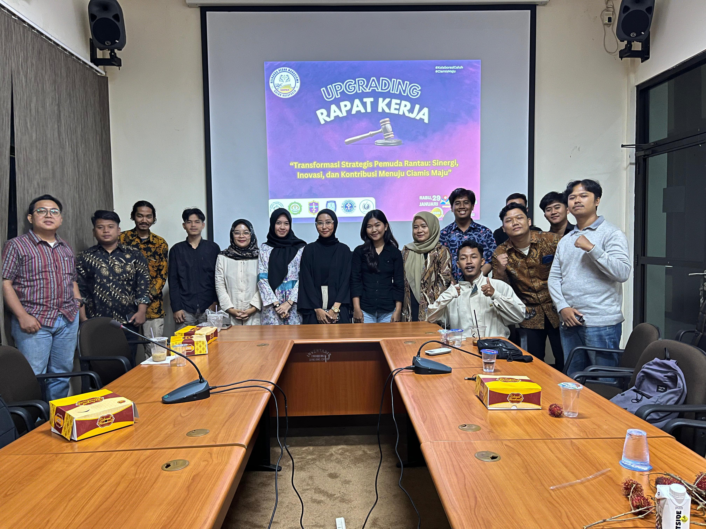
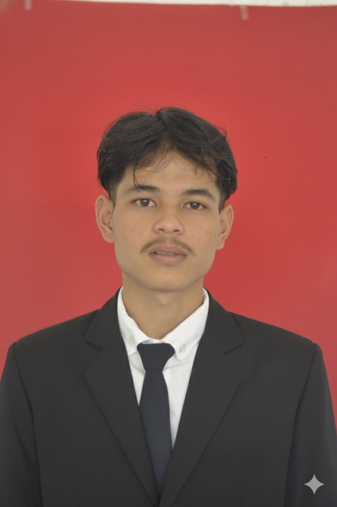
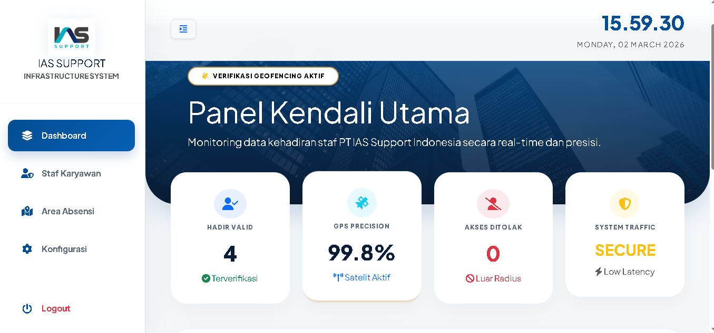
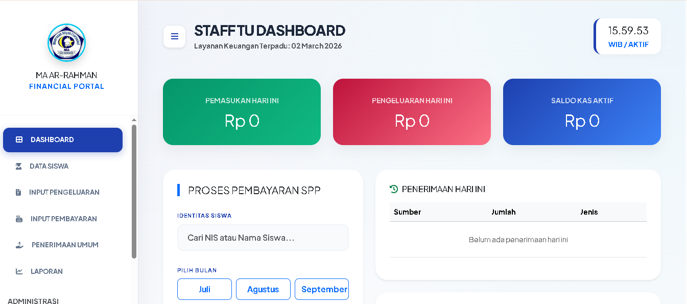
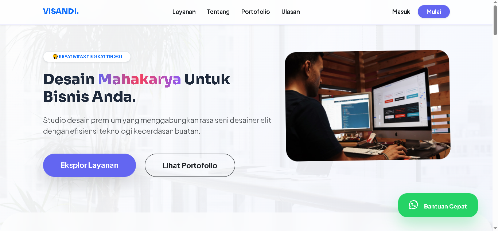
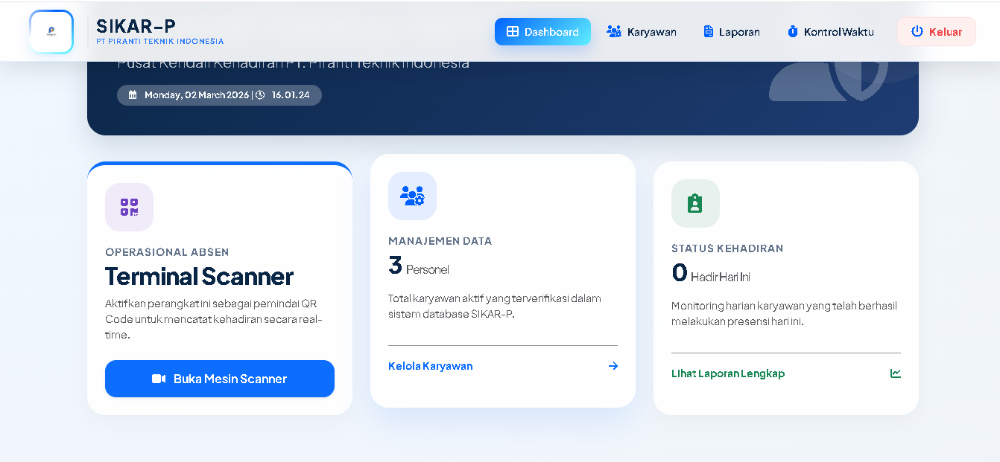

Visualisasi
Visualization
Galeri Kegiatan
Activity Gallery






Kandidat proaktif yang andal dalam beradaptasi, problem-solving, dan komunikasi operasional. Cepat menguasai hal baru dan berdedikasi tinggi untuk memberikan kontribusi nyata serta produktivitas kerja di berbagai bidang pekerjaan.
A proactive candidate highly skilled in adaptability, problem-solving, and operational communication. Quick to learn new things and highly dedicated to making a real impact and driving productivity in any field of work.

Sebagai individu yang terbiasa bekerja secara multitasking, saya memiliki kemampuan adaptasi yang tinggi di berbagai lingkungan kerja. Saya menggabungkan pemikiran analitis dengan eksekusi kerja yang praktis dan efisien.
Pengalaman saya memimpin tim di berbagai organisasi dan menyelesaikan beragam proyek telah membentuk saya menjadi komunikator yang handal, pengambil keputusan yang taktis, dan penyelesai masalah (*problem solver*) yang responsif dalam menghadapi kendala operasional sehari-hari.
Saya adalah pembelajar cepat (*fast learner*) yang antusias terhadap tantangan baru, terbiasa menjaga kualitas kerja di bawah tekanan, dan siap ditempatkan di posisi mana pun untuk memberikan dedikasi serta produktivitas terbaik bagi perusahaan.
A multitasking professional who combines expertise as an information system developer, network security enthusiast, and organizer in operational administration.
I have a proven track record in designing practical solutions; from building smart attendance systems to integrated financial management platforms. On the other hand, my experience in managing organizations proves my managerial skills, technical problem-solving, and solid team communication.
I am an adaptive individual, accustomed to maintaining high-quality work under pressure, and ready to be placed in both technical and administrative sectors to provide full dedication to the company.
Nama Lengkap
Full Name
Sandi Selamet
Tanggal Lahir
Birth Date
27 Jan 2004
Domisili
Location
Ciamis, Jabar
Pendidikan
Education
D3 Manajemen Info.
Berorientasi pada penyelesaian tugas administratif maupun teknis secara tepat waktu.
Oriented towards completing both administrative and technical tasks on time.
Cepat menganalisis kendala operasional dan mencari solusi (*troubleshooting*) terbaik.
Quick to analyze operational hurdles and find the best troubleshooting solutions.
Mampu berkolaborasi lintas divisi dengan komunikasi interpersonal yang baik.
Able to collaborate across divisions with excellent interpersonal communication.
Mampu menangani operasional administrasi sekaligus perbaikan teknis/IT.
Capable of handling administrative operations and technical/IT fixes simultaneously.
Bukti nyata keahlian saya dalam merancang perangkat lunak operasional yang fungsional dan siap pakai.
Concrete proof of my expertise in designing functional and ready-to-use operational software.

Web Application
Sistem kehadiran pegawai *real-time* berbasis validasi lokasi (GPS). Menggunakan verifikasi *geofencing* radius aktif, anti-lokasi palsu (fake GPS), dan rekapitulasi data otomatis.
Real-time employee attendance system based on GPS location validation. Uses active geofencing verification, anti-fake GPS, and automatic data recapitulation.

Financial Platform
Aplikasi pencatatan keuangan operasional (Budgeting, Penggajian) yang terintegrasi API Midtrans. Membantu tugas bendahara merekap transaksi secara *paperless*.
Operational financial recording application (Budgeting, Payroll) integrated with Midtrans API. Assists treasurers in recapitulating transactions paperlessly.

Landing Page
Platform pameran portofolio dan company profile. Dibangun dengan fokus pada *User Interface* yang estetis, animasi halus, dan *UX* yang memanjakan pengunjung.
Portfolio exhibition and company profile platform. Built with a focus on aesthetic User Interface, smooth animations, and visitor-pleasing UX.

Scanner Application
Sistem pencatatan data super cepat berbasis pemindaian QR Code dan Barcode. Dirancang untuk mempercepat antrean absen di gerbang masuk sekolah/kantor.
Super-fast data recording system based on QR Code and Barcode scanning. Designed to speed up attendance queues at school/office entrance gates.
Dinas Komunikasi dan Informatika (Diskominfo)
📍 Kabupaten Ciamis, Jawa Barat
Berperan dalam divisi IT. Tugas utama mencakup pengamanan data publik instansi serta mengurus dokumen laporan pemeliharaan harian (*maintenance*).
Served in the IT division. Main tasks included securing public agency data and handling daily maintenance report documents.
Terlatih dalam membuat dokumen resmi (Proposal, LPJ, Surat Dinas), merapikan arsip menggunakan Excel, dan memastikan keakuratan pelaporan data.
Trained in drafting official documents (Proposals, Reports), organizing archives using Excel, and ensuring data reporting accuracy.
Melalui peran sebagai Ketua dan Wakil di organisasi, saya mampu mendelegasikan tugas, memimpin rapat, dan memastikan target tim tercapai.
Through roles as President and Vice President in organizations, I can delegate tasks, lead meetings, and ensure team targets are met.
Mampu menganalisis masalah pada sistem (*bug*), menangani perbaikan ringan IT, dan membangun program otomatisasi untuk mempercepat kerja.
Capable of analyzing system issues (bugs), handling minor IT fixes, and building automation programs to speed up workflows.
D3 Manajemen Informatika
D3 Informatics Management
Mempelajari ilmu manajerial komputerisasi, penyusunan database, logika pemrograman, dan perancangan sistem informasi bisnis.
Studying computerized managerial science, database structuring, programming logic, and business information system design.
Jurusan Keagamaan
Religious Studies Major
Lulus dengan kedisiplinan dan moral yang kuat. Dipercaya memegang kepemimpinan tertinggi sebagai Ketua OSIS (2022-2023).
Graduated with strong discipline and morals. Trusted with the highest leadership as Student Council President (2022-2023).
Menjadi fondasi keaktifan dalam organisasi siswa dengan menjabat sebagai Wakil Ketua OSIS.
Became the foundation of activity in student organizations by serving as Vice President of the Student Council.





LDK STMIK DCI
Himpunan Manajemen Informatika
Keluarga Mahasiswa Ciamis (KMC)
Keluarga Mahasiswa Ciamis (KMC)
Himpunan Manajemen Informatika
MA Ar-Rahman
Siap berdiskusi untuk tawaran pekerjaan administrasi, IT, atau *freelance*.
Ready to discuss admin, IT job offers, or freelance collaborations.
sandiselamet8@gmail.com
085219849285
Cikoneng, Kab. Ciamis